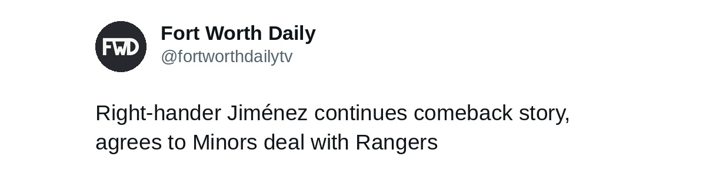
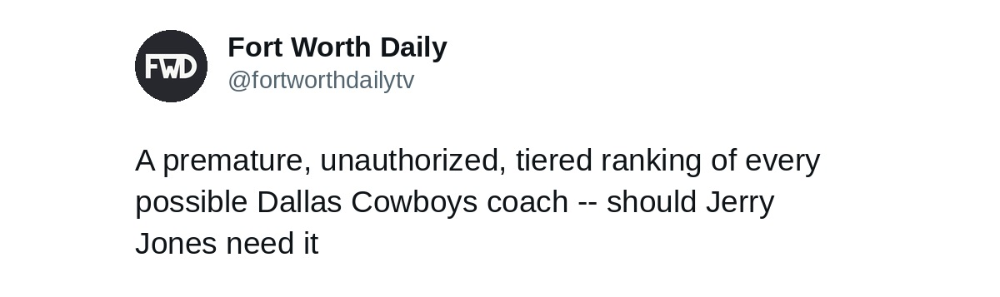
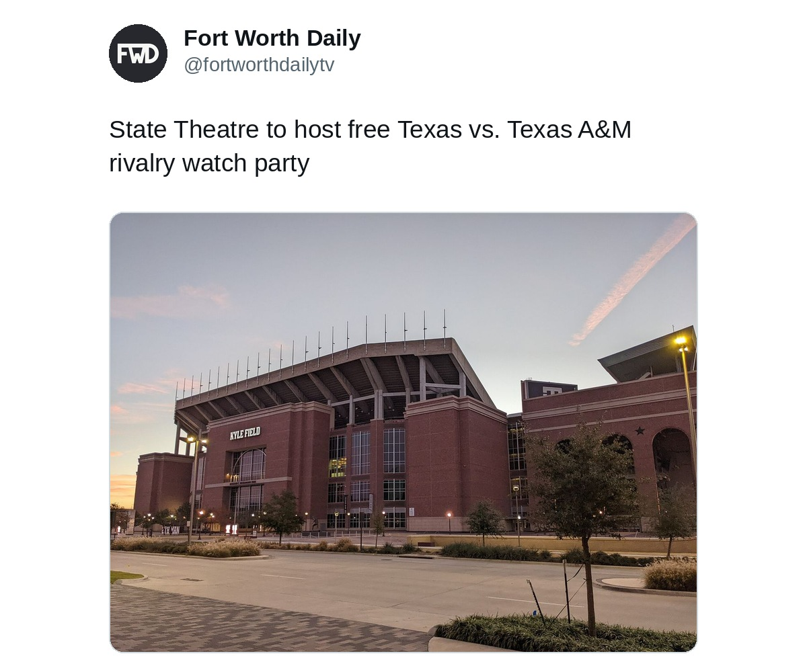

Former All-Star right-hander Joe Jiménez agreed with the Rangers on a Minor League contract, a source told MLB.com's Mark Feinsand on Friday. The team has not confirmed the deal, which constitutes the conclusion of quite a journey for the veteran reliever, who missed the entirety of the 2025-26 seasons.

👍 ❤️ 😮 ✅ written to disk (dry run)
story + scoring
{
"source": "Texas Rangers (MLB.com)",
"kind": "rss",
"score": 0.8475,
"relevance": 2,
"url": "https://www.mlb.com/rangers/news/joe-jimenez-minor-league-contract-with-rangers",
"image_license": "card",
"image_credit": "Card: FWD"
}After their latest calamitous loss, the Cowboys are 5-7 and their playoff "hopes" barely exist anymore. They have suffered several embarrassing defeats this season, including two in which they blew multi-score fourth-quarter leads at home and two in which they lost to backup quarterbacks — again at home.

👍 ❤️ 😮 ✅ written to disk (dry run)
story + scoring
{
"source": "CBS Sports",
"kind": "rss",
"score": 0.6133,
"relevance": 2,
"url": "https://www.cbssports.com/nfl/news/dallas-cowboys-coach-candidates-if-jerry-jones-fires-brian-schottenheimer/",
"image_license": "card",
"image_credit": "Card: FWD"
}The State Theatre in Austin is set to host a free Texas vs. Texas A&M rivalry watch party on Black Friday. Doors will open at 5:30 p.m. ahead of the 6:30 p.m. kickoff, according to event organizers.

👍 ❤️ 😮 ✅ written to disk (dry run)
story + scoring
{
"source": "KXAN Austin",
"kind": "rss",
"score": 0.5413,
"relevance": 2,
"url": "https://www.kxan.com/things-to-do/state-theatre-to-host-free-texas-vs-texas-am-rivalry-watch-party/",
"image_license": "wikimedia-cc",
"image_credit": "Photo: Oldag07 via Wikimedia Commons (CC BY-SA 4.0)"
}